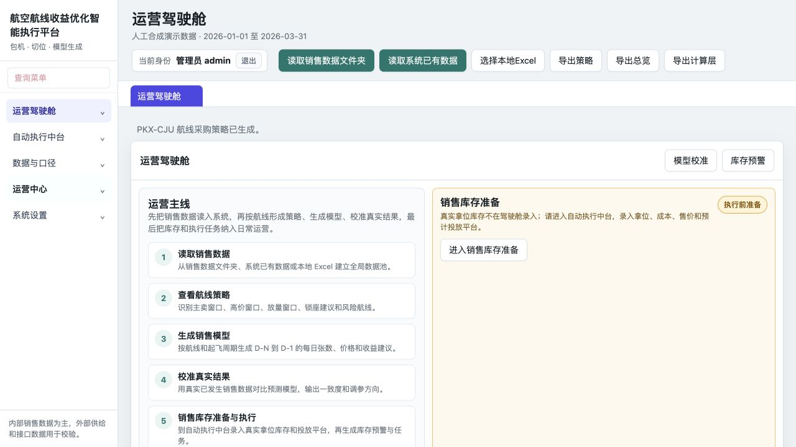

读取销售数据，形成航线策略
识别主卖、高价和放量窗口，把经验判断转化为可回看的策略结果。
我是航空从业者，不是程序员。我把航线经营、销售节奏和库存风险逐项讲给 AI，再用真实操作和隔离测试反复校正。
从判断到执行
识别主卖、高价和放量窗口，把经验判断转化为可回看的策略结果。
围绕 D-N 到 D-1 的窗口安排价格、放量和复盘。
在执行前识别库存压力、价格风险和保护边界。
策略进入任务池后必须经过人工确认，避免自动改动真实业务。

公开版本包含合成演示数据，可查看策略、销售模型、库存预警、运营台账和权限入口。
销售文件、系统已有数据或本地 Excel 建立分析基础。
输出销售窗口、库存风险、价格建议和执行条件。
任何执行动作都先由用户确认，保留操作边界。
通过 Mock OTA 检查政策、订单、取消和库存回流。
公开展示不等于生产系统。边界写清楚，才方便真实交流和继续验证。
如果这个项目对你有启发，可以查看源码、给项目一个 Star，或通过 Issue 交流。